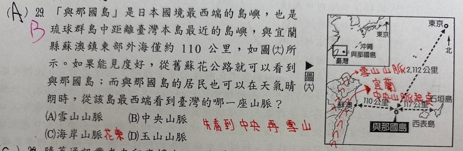
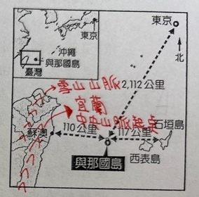

原AI對話 ↗
「與那國島」是日本國境最西端的島嶼，也是琉球群島中距離臺灣本島最近的島嶼，與宜蘭縣蘇澳鎮東部外海僅約110公里，如圖(六)所示。如果能見度好，從舊蘇花公路就可以看到與那國島；而與那國島的居民也可以在天氣晴朗時，從該島最西端看到臺灣的哪一座山脈？
(A) 雪山山脈 (B) 中央山脈 (C) 海岸山脈 (D) 玉山山脈
保留原件列單題待核，B紅筆改答及原題四選項全留；不自行復原被覆寫圖線。

